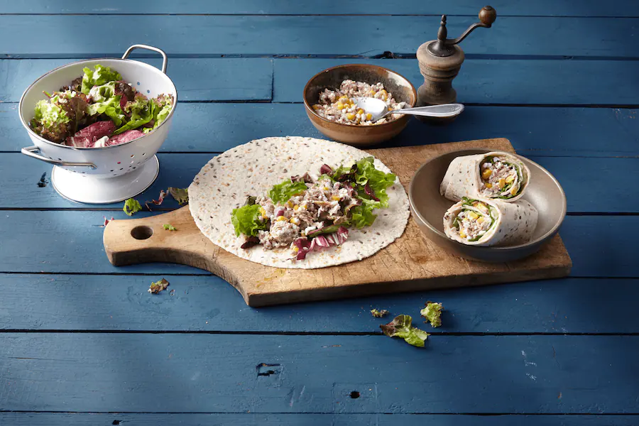

15 Minuten Thunfisch Wrap
| Zutaten |
|---|
| 2 Dosen Thunfisch in eigenem Saft |
| 1 Dose Mais |
| 1 rote Zwiebel |
| 200g körniger Frischkäse |
| Salz |
| Pfeffer |
| 4 Weizen-Tortillas |
| 80g Salatmischung |

Schritt 1
Thunfisch und Mais abgießen. Zwiebel schälen und hacken.
Schritt 2
Thunfisch, Mais und Zwiebeln mit dem Frischkäse mischen und mit Salz und Pfeffer würzen.
Schritt 3
Tortillas nebeneinanderlegen und je 20 g Salat darauf verteilen. Je ¼ des Frischkäse-Mix länglich auf einer Seite verstreichen und Wraps aufrollen.